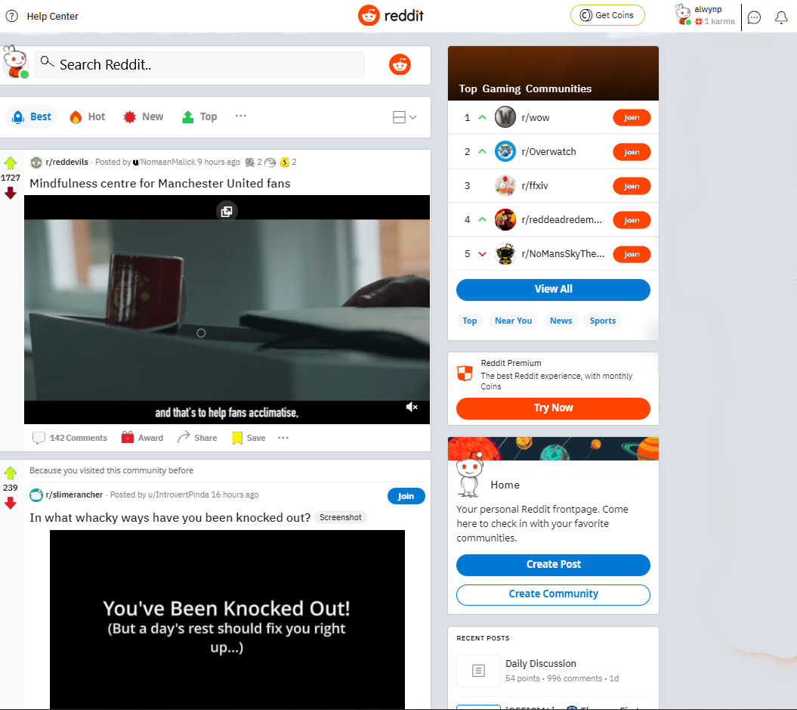
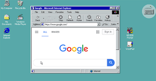

Prototype

To the right you'll see my prototype design for Reddit. With only a few small and simple changes it may be hard to notice what I changed and why.
Trimming
The first thing I noticed is that there are these wide grey borders on the screen which makes the website have an outdated look. So I first trimmed the website then removed most the symbols's from the top bar. I amade hte messages, notifications, profile and help center icons easily accessible. Iremoved the reach bar from the top and moved it to where the 'Create a post' bar was. These changes were important to me to make the page much more attractive to look at. You need your website to be attractive to bring in new users
Fresh Look
Another ascept that I added to the UI that I find neccessary to change is the colouring. Reddit is such a plain, bland and simple looking site. This makes things hard to find as everything pretty much blends in making it an eyesore. The grey and white mixed with simple blocky look makes the website look like it was built for Windows 98. With this in mind asked some smaller collour changes.
